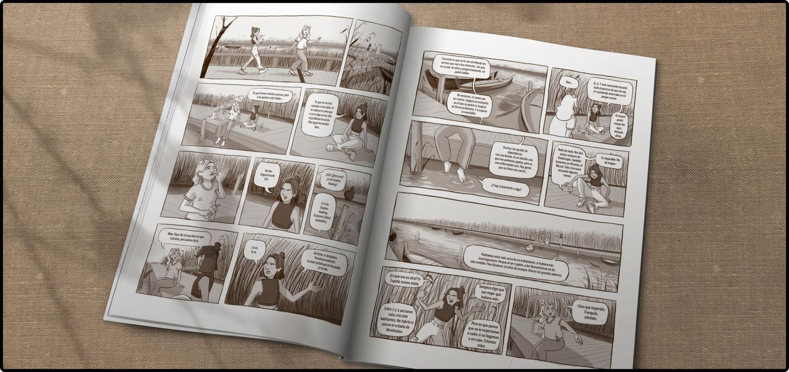
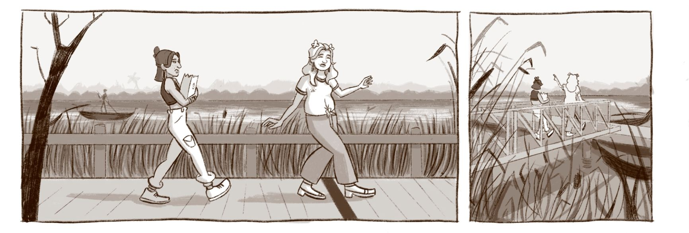
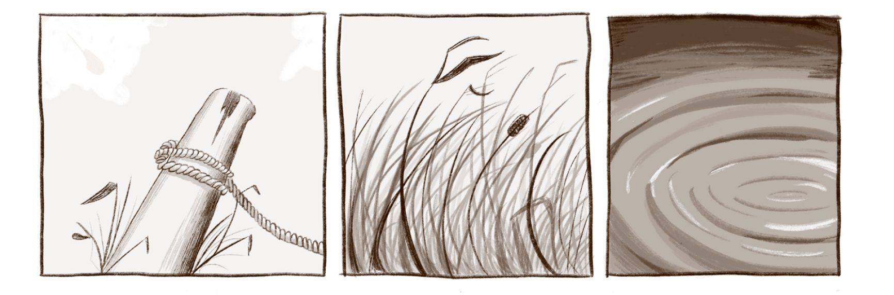
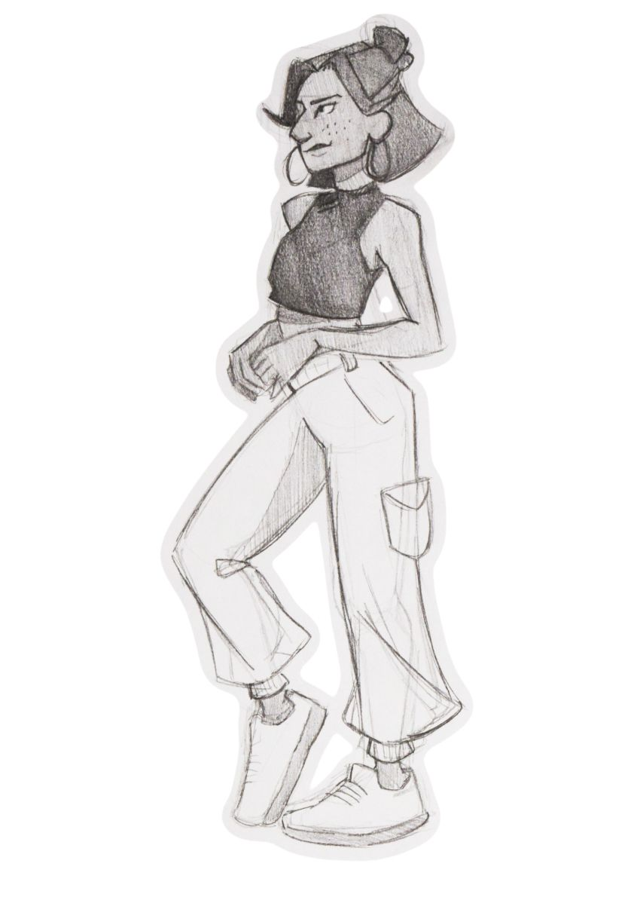

diseñadora ux/ui · ilustradora
Extra
Cómic
Mi Trabajo de Fin de Grado: el primer capítulo de un cómic sobre la esclerosis lateral amiotrófica (ELA). Dos hermanos jóvenes diagnosticados intentan sacar adelante una campaña para concienciar y recaudar fondos, mientras aprenden a aceptar su diagnóstico. El título sale de una frase de Montxo Iriarte, presidente de ANELA, sobre el azar de la enfermedad: «No tiene descubiertas las causas. Viene, aparece, y sin más. Y te ha tocado la lotería».
Tipo
Formato
Técnica
Año

Antes de dibujar
Antes de dibujar, investigué: recogí testimonios de personas cercanas a la enfermedad, contacté con asociaciones y estudié cómo otras obras habían tratado temas parecidos. Con eso definí el problema, los objetivos y el plan de trabajo.
— Una enfermedad poco conocida entre la población — Atención sanitaria fragmentada — Ayudas sociales insuficientes o tardías — Afecta también a familias y cuidadores — Poca financiación para investigar
— Divulgar qué es la ELA — Visibilizar las dificultades de los pacientes — Señalar cómo gestionan la enfermedad las autoridades — Y uno personal: homenajear a mi tío
— Investigación y testimonios — Estudio de géneros: coming-of-age y realista — Guion y storyboard — Diseño de personajes y escenarios — Lápiz, tinta y color
Interiores
Ritmo y silencio: las secuencias sin diálogo dejan que el paisaje respire entre escena y escena.



Siguiente extra